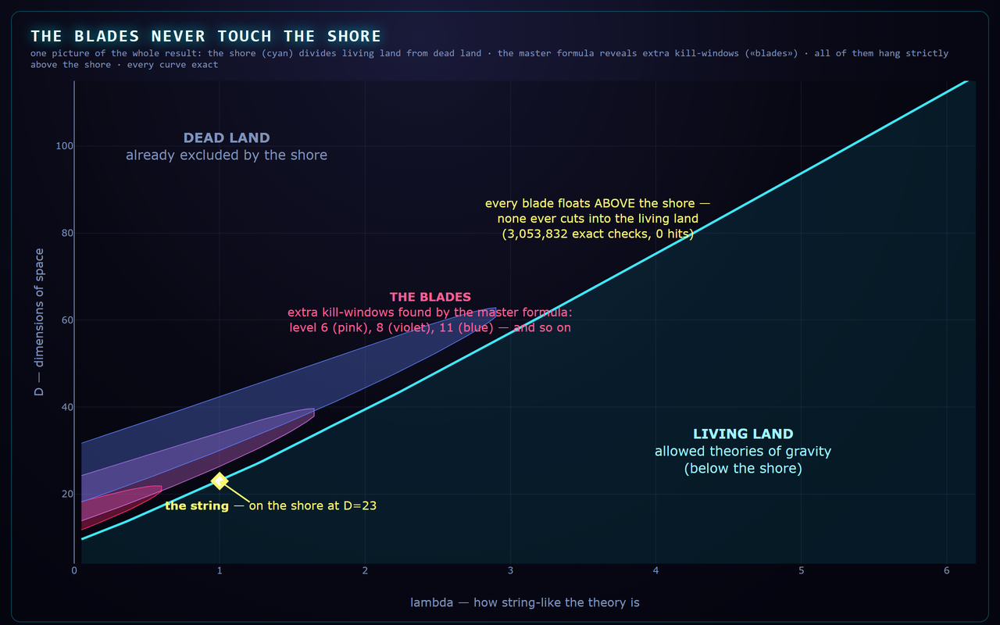
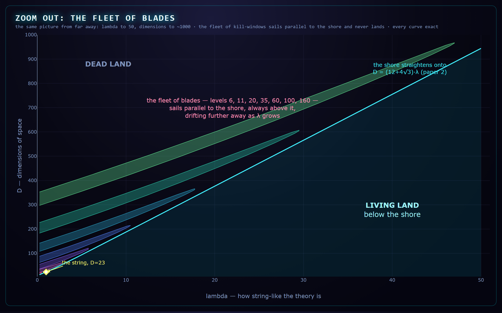

Our previous paper found the cliff: the exact line where candidate theories of quantum gravity die as spacetime dimensions grow. But a cliff measured once could still hide trapdoors — other ways to fail somewhere else. This work derives one closed formula for all of them, shows each is a finite “window” hanging strictly above the cliff line, and checks three million points in exact arithmetic: not a single trapdoor opens on the safe side.
For the Cheung–Hillman–Remmen graviton family (which contains textbook string theory), every Regge-trajectory partial wave $a_{n,2n-2j}$ obeys a single sign law: an alternating “ladder” polynomial with factorial weights, integer symmetric functions of the residue roots, and a chain of dimension shifts. The trajectory law of the previous paper is its first rung; the second rung reveals that each level cuts a finite window of dimensions and re-releases beyond it — for the string the first window is D ∈ (26.2, 30.4) at level 7, confirmed by exact evaluation to the unit.

The blades never touch the shore: every extra kill-window floats strictly above the boundary of the previous paper. Closest approach: 2.17 dimensions.
The formula is derived, not fitted — residue roots plus an exact monomial–Gegenbauer integral. Batteries (all exact arithmetic): 22/22 symbolic matches against independently extracted brackets; a blind test on a trajectory the construction never used (702/702); and an independent adversarial review that re-derived the theorem, mechanically proved the key integral, and wrote its own evaluator from scratch — 4,060/4,060 sign agreements including odd and fractional dimensions. The completeness sweep then evaluated every trajectory constraint at every integer dimension inside the allowed region: 3,053,832 verdicts, zero violations.
A house rule of this lab: every paper ships with a way to explain it to your family. Think of the cliff from the last paper. This paper asked: are there other ways to fall that we missed? We found the formula for every single one. Each turns out to be a floating blade — a strip of dimensions where a theory dies — and when we drew the whole fleet of blades, they all sail parallel to the shore, always above it, never cutting into the land of the living. Three million exact checks; zero surprises. The cliff keeps looking like the true edge.

Honest status: the master formula is a theorem (derived; independently re-derived and adversarially attacked with zero falsifications). Completeness of the boundary remains a conjecture, now verified against every trajectory constraint on 3,053,832 exact points and labeled as such in the paper. DOI: to be minted with the archived release.
{kind=link}